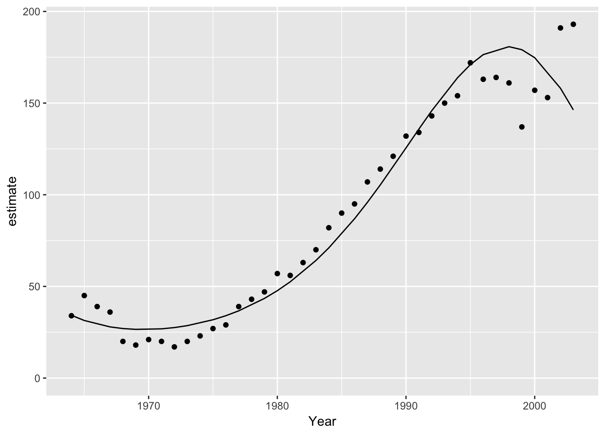

tmbr
Introduction
tmbr (pronounced timber) is an R package to facilitate analyses using Template Model Builder (TMB). It is part of the mbr family of packages.
Installation
Installation of TMB on Windows is currently proving challenging. Until these issues are resolved tmbr is only supported on unix-based OSs.
To install from GitHub
# install.packages("devtools")
devtools::install_github("poissonconsulting/tmbr")Demonstration
model <- model("#include <TMB.hpp>
template<class Type>
Type objective_function<Type>::operator() () {
DATA_VECTOR(Pairs);
DATA_VECTOR(Year);
DATA_FACTOR(Annual);
DATA_INTEGER(nAnnual);
PARAMETER(alpha);
PARAMETER(beta1);
PARAMETER(beta2);
PARAMETER(beta3);
PARAMETER_VECTOR(bAnnual);
PARAMETER(log_sAnnual);
Type sAnnual = exp(log_sAnnual);
vector<Type> ePairs = Pairs;
Type nll = 0.0;
for(int i = 0; i < nAnnual; i++){
nll -= dnorm(bAnnual(i), Type(0), sAnnual, true);
}
for(int i = 0; i < Pairs.size(); i++){
ePairs(i) = exp(alpha + beta1 * Year(i) + beta2 * pow(Year(i), 2) + beta3 * pow(Year(i), 3) + bAnnual(Annual(i)));
nll -= dpois(Pairs(i), ePairs(i), true);
}
ADREPORT(sAnnual)
return nll;
}")
# add R code to calculate derived parameters
model %<>% update_model(new_expr = "
for (i in 1:length(Pairs)) {
log(prediction[i]) <- alpha + beta1 * Year[i] + beta2 * Year[i]^2 + beta3 * Year[i]^3 + bAnnual[Annual[i]]
}")
# define data types and center year
model %<>% update_model(
gen_inits = function(data) list(alpha = 4, beta1 = 1, beta2 = 0, beta3 = 0, log_sAnnual = 0, bAnnual = rep(0, data$nAnnual)),
select_data = list("Pairs" = integer(), "Year*" = integer(), Annual = factor()),
random_effects = list(bAnnual = "Annual"))
data <- bauw::peregrine
data$Annual <- factor(data$Year)
analysis <- analyse(model, data = data)
#> Note: Using Makevars in /Users/joe/.R/Makevars
#> # A tibble: 1 x 5
#> n K logLik IC converged
#> <int> <int> <dbl> <dbl> <lgl>
#> 1 40 5 -154 321 T
#> Warning: 4 external pointers will be removed
coef(analysis)
#> # A tibble: 5 x 7
#> term estimate sd zscore lower upper pvalue
#> <S3: term> <dbl> <dbl> <dbl> <dbl> <dbl> <dbl>
#> 1 alpha 4.26 0.0379 112 4.19 4.34 0
#> 2 beta1 1.19 0.0697 17.1 1.05 1.33 2.10e⁻⁶⁵
#> 3 beta2 -0.0177 0.0289 - 0.611 -0.0743 0.0390 5.41e⁻ ¹
#> 4 beta3 -0.272 0.0357 - 7.62 -0.342 -0.202 2.63e⁻¹⁴
#> 5 log_sAnnual -2.31 0.271 - 8.53 -2.84 -1.78 1.45e⁻¹⁷year <- predict(analysis, new_data = "Year")
ggplot(data = year, aes(x = Year, y = estimate)) +
geom_point(data = bauw::peregrine, aes(y = Pairs)) +
geom_line() +
expand_limits(y = 0)
Contribution
Please report any issues.
Pull requests are always welcome.
Please note that this project is released with a Contributor Code of Conduct. By participating in this project you agree to abide by its terms.